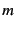
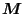
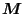
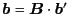
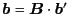

Next: Lubrication Correction
Up: Hydrodynamic Interaction in Stokes
Previous: FTS formulation
When we are interested in particle dynamics,
the mobility problem is the main target.
However, in several situations, we may want to introduce
fixed particles into the simulation representing some
obstacles or vessel to support other mobile particles.
[16]
In those cases, it is not a simple mobility problem but
the mixed problems, that is,
the ``mobility and resistance'' problem:
Here, we denote the mobile and fixed particles by
the superscripts  and , respectively.
After sorting by the known and unknown variables,
we have
where given parameters are in the left-hand side
and the unknowns are in the right-hand side.
It is straightforward to obtain the matrices  and
by 's.
and
by 's.
Because the matrices are known variables,
the generalized form of linear set of equations (3.30)
can be solved by the standard iterative method
by giving the procedure to calculate
 with in (3.30)
for a given vector

appeared in the left-hand side of Eq. (3.30).
with in (3.30)
for a given vector

appeared in the left-hand side of Eq. (3.30).
To reduce the debugging cost (and extra complexity of the code),
the implementation of the scheme in the library libstokes
is in this way.3.1
Next: Lubrication Correction
Up: Hydrodynamic Interaction in Stokes
Previous: FTS formulation
Kengo Ichiki 2008-10-12